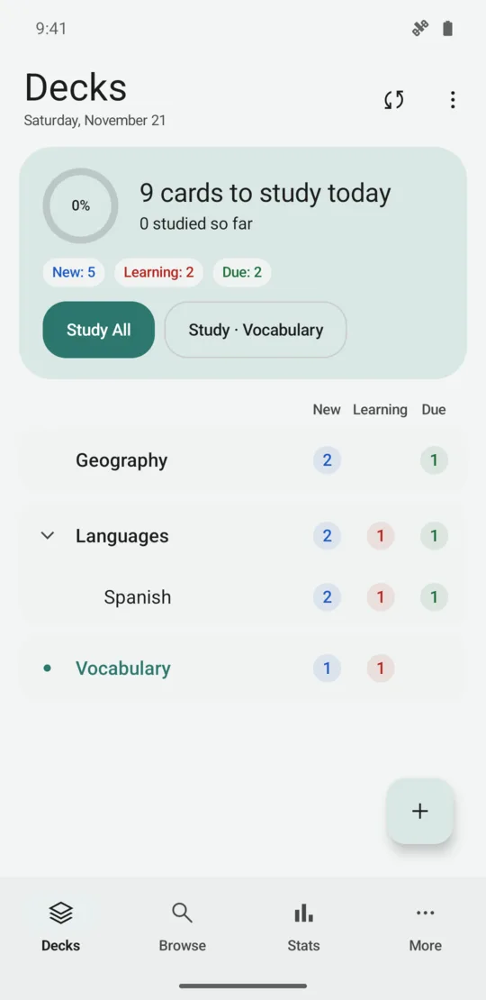
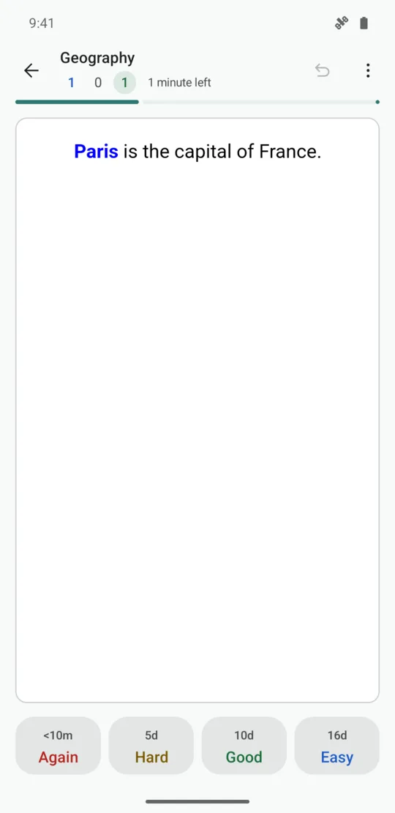
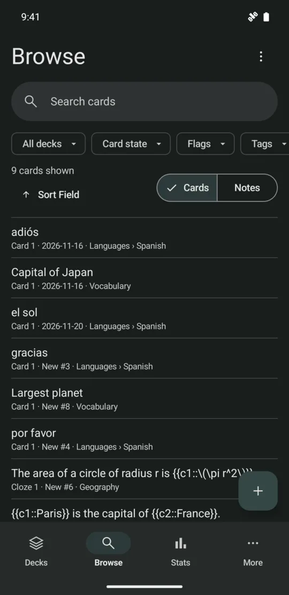
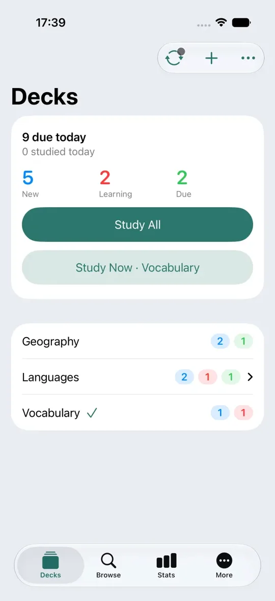
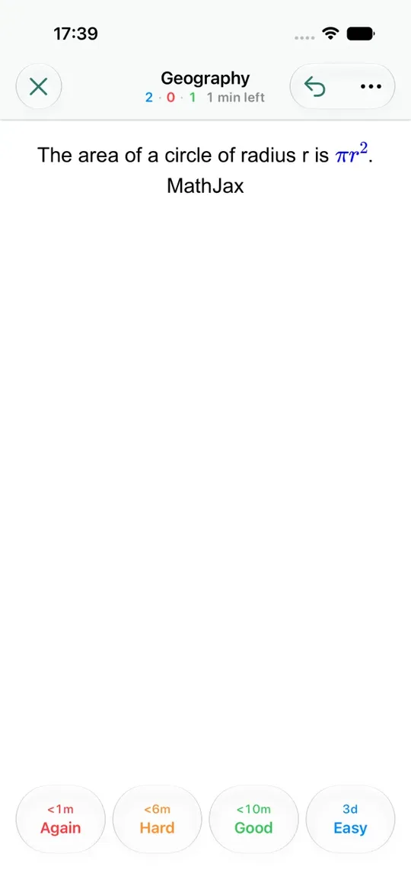
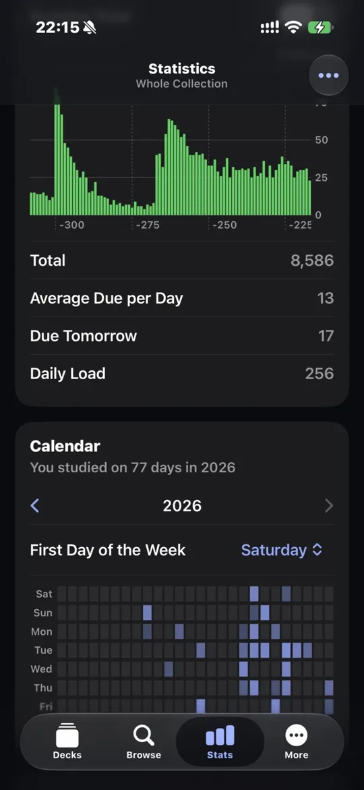
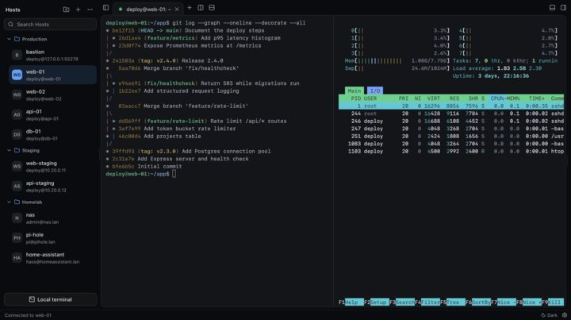
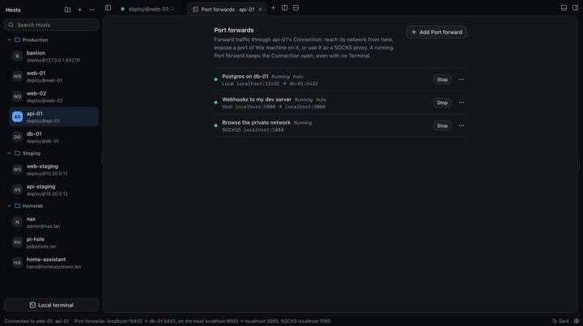

Runs on Android 7.0 and later
Version 0.2.0 builds on AnkiDroid with a Jetpack Compose interface and installs beside it.
Download Hayaki for Android

Anki flashcards for Android and iPhone, plus a dictionary reader, a Markdown editor, a download manager and an SSH client for the desktop. All five are on GitHub.


Study your Anki collection without a connection. Anki’s own scheduler sets when each card comes back, and you sync with AnkiWeb or your own server.
Version 0.2.0 builds on AnkiDroid with a Jetpack Compose interface and installs beside it.
Download Hayaki for Android

A native SwiftUI app around Anki’s Rust core. Build it in Xcode and install it on your device.
Read the iOS build steps

Type a word once and every dictionary in the group answers on one page, each entry in its own layout.
Select a word in another app and press the shortcut: the Mini Window shows the entry beside it. Saved words go to a Word Book.
ephemeral pleasures 短暂的欢乐
Markdown renders as you type, and the syntax at the cursor comes back for editing. Saving keeps every byte outside your edits. Version 0.3.3, with 24 themes.
See MINT on GitHub.md file on disk; open it in any editor.| Action | macOS | Windows and Linux |
|---|---|---|
| Find a file in the folder | ⌘P | Ctrl+P |
| Open the command palette | ⌘⇧P | Ctrl+Shift+P |
| Toggle Source Mode | ⌘/ | Ctrl+/ |
Hosts sit in groups, imported from your SSH config. The file panel follows the shell’s cd and queues your uploads.
Tabs and split panes run on xterm.js with WebGL. A dropped connection comes back on its own.

Forwards can start when you connect. Secrets stay in the system keychain, and known hosts are shared with OpenSSH.

Version 0.2.0 for Windows, macOS and Linux, built with Tauri and Rust.
See SSH Astra on GitHubUp to 32 connections a file, and resume at the byte after a crash. On the project’s loopback test it fetched 512 MiB in 1.24 s; aria2 took 3.97 s. Version 1.4.6 for Windows and macOS.
See NimGet on GitHubHost caps, speed limits and a schedule.
The extension hands over links and sessions.
BitTorrent v1 and v2; HLS saved as MP4.
Its commands also drive the desktop app.